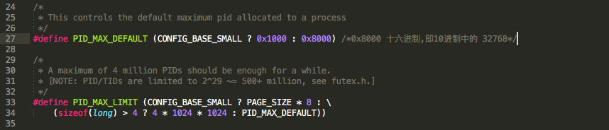
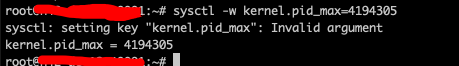
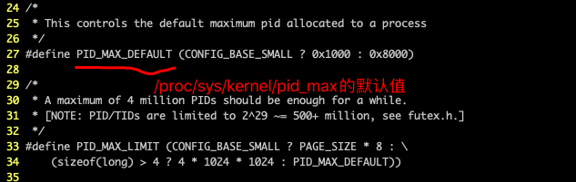

一 默认情况下
默认是32768 ，代表默认情况下，系统内最多有32768个进程。
二 常见优化手段
sysctl -w kernel.pid_max=65535
三 那么它的上限是多少呢？
定义在
./include/linux/threads.h

最大值是4 * 1024 * 1024 ，也就是4194304 当我们手工设置超过这个值时，会报错。

四 如果没有调整过/proc/sys/kernel/pid_max,那么它的默认值是多少呢

0x8000，就是10进制的32678
五 内核中2个常量
PID_MAX_LIMIT 代表系统最大可以分配的PID上限，用户空间通过/proc/sys/kernel/pid_max怎么修改都可以，但不能超过PID_MAX_LIMIT, 因此它就是4百万 PID_MAX_DEFAULT ，是32678
六 Linux系统中可以存在的最大线程数
kernel.threads-max官方说明
/proc/sys/kernel/threads-max (since Linux 2.3.11)
This file specifies the system-wide limit on the number of
threads (tasks) that can be created on the system.
Since Linux 4.1, the value that can be written to
threads-max is bounded. The minimum value that can be
written is 20. The maximum value that can be written is
given by the constant FUTEX_TID_MASK (0x3fffffff). If a
value outside of this range is written to threads-max, the
error EINVAL occurs.
The value written is checked against the available RAM
pages. If the thread structures would occupy too much
(more than 1/8th) of the available RAM pages, threads-max
is reduced accordingly.
Linux doesn't have a separate threads per process limit, just a limit on the total number of processes on the system (threads are essentially just processes with a shared address space on Linux) which you can view like this:
cat /proc/sys/kernel/threads-max
The default is the number of memory pages/4. You can increase this like:
echo 100000 > /proc/sys/kernel/threads-max
There is also a limit on the number of processes (and hence threads) that a single user may create, see ulimit/getrlimit for details regarding these limits.
小结:
- Linux有系统层面的最大线程数限制,系统中存在的task_struct数量,无法超过kernel.threads-max
- Linux有系统层面最大的PID值限制,没有任何一个task_struct的pid可以大于kernel.pid_max
- 同时每个用户可以创建的最大进程数也是有限制的,通过ulimit设置